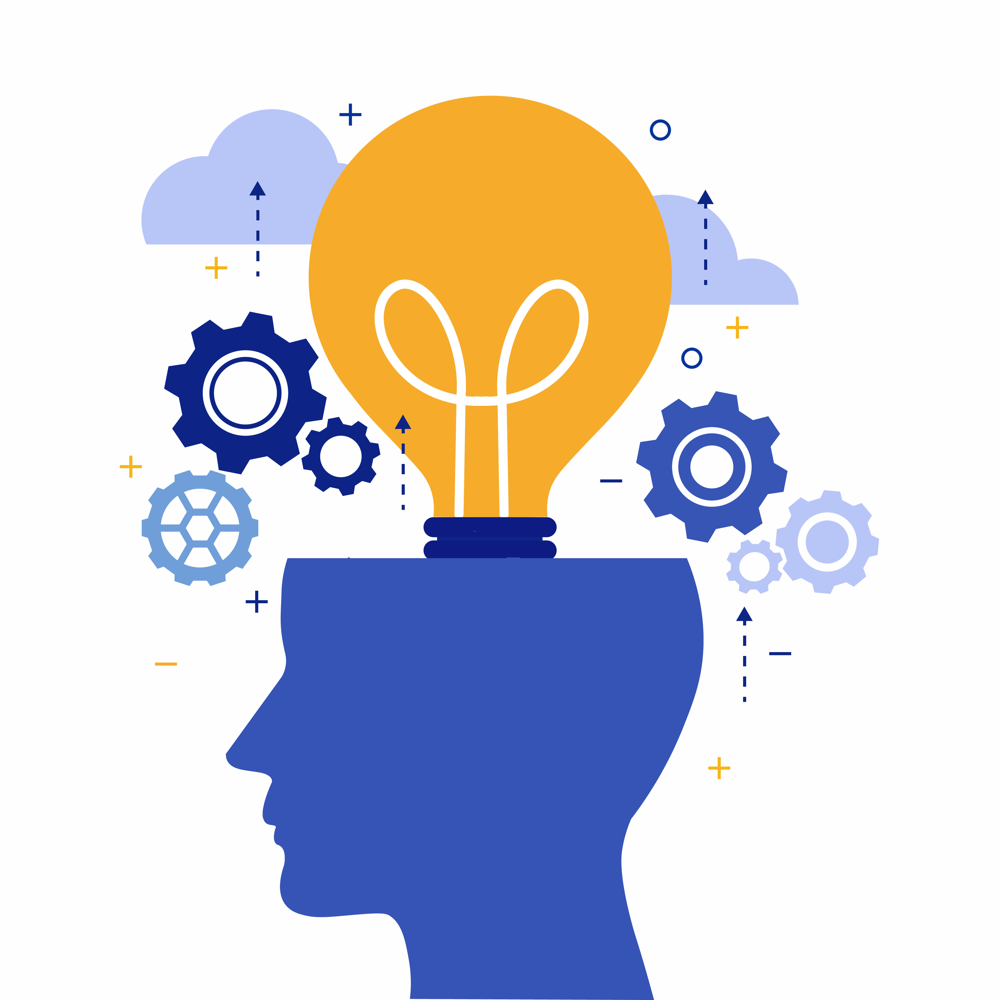

Balancing Fun and Functionality
The Key to a Fulfilling Life
By Christopher Robison

Life is too short to be all work and no play, but it’s also too valuable to squander away in idle fun. Striking the right balance between enjoyment and productivity isn’t just a nice-to-have; it’s essential for long-term well-being and success. Here’s why incorporating fun into your life while still getting the job done is vital.
Boosts Creativity and Problem-Solving Skills
When you’re enjoying yourself, your brain releases endorphins, which can lead to increased creativity and better problem-solving skills. You become more open to new ideas and less stuck in your ways. Think about it; when you’re relaxed, it’s much easier to come up with innovative solutions. So, allowing time for fun can make you more efficient and effective in your work.
Reduces Burnout
Work is important, but it’s just one aspect of life. Focusing solely on work can lead to burnout, a state of emotional, physical, and mental exhaustion. The antidote? Fun! Engaging in activities you enjoy can act as a buffer against stress, making you more resilient in the long run.
Improves Relationships
Taking time for fun and relaxation often involves social activities, helping you build stronger relationships. These connections can be an excellent resource both personally and professionally. In a work context, this means better teamwork, more effective communication, and a generally more pleasant work environment.
Keeps You Grounded
Incorporating fun into your routine also provides a sense of perspective. Not every task needs to be a life-or-death situation. Sometimes it’s okay to let your hair down and remember that life is not just about hitting milestones; it’s also about enjoying the journey.
Tips for Finding the Right Balance
Prioritize: Not everything on your to-do list is urgent. Prioritize tasks and make sure to leave some time for activities you enjoy.
Schedule Fun: If it’s not on the calendar, it won’t happen. Make an effort to schedule leisure activities just like you would any other important appointment.
Set Boundaries: Make it a point to shut off from work after a certain hour. This discipline will not only make you more productive but also free up time for fun activities.
Be Present: Whether you’re working or having fun, make sure to be present in the moment. This approach maximizes your enjoyment and effectiveness, no matter what you’re doing.
Conclusion
Finding the right balance between fun and functionality is not a one-time act; it’s an ongoing process. So the next time you’re buried under a pile of work, remember that a little fun isn’t just a frivolous indulgence—it’s a necessity. You might find that it not only makes life more enjoyable but also helps you get the job done better than ever before.